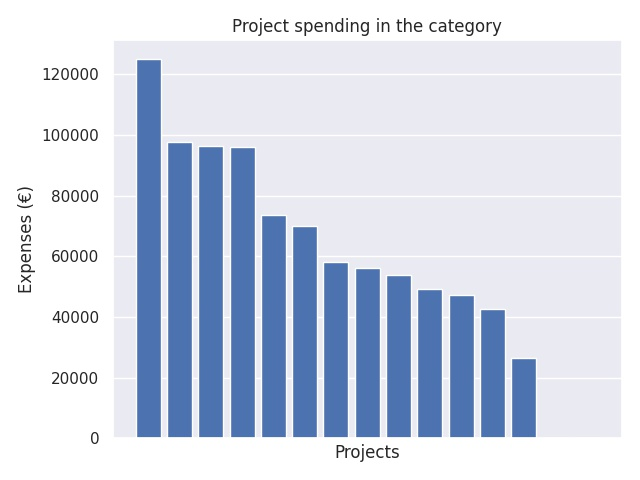

Ammatillisen koulutuksen kansainvälistyminen
Category summary
59.5K spent on average
125K highest spending

Reports in the category
Espoon seudun koulutuskuntayhtymä Omnia
Project name: HANAKO International
125K spent
Jokilaaksojen koulutuskuntayhtymä (1.1.2018 Koulutuskeskus Jedu, Ylivieska)
Project name: Finland 100 in China
97.6K spent
Kouvolan kaupunki/Kouvolan seudun ammattiopisto
Project name: Verkostona Venäjälle
96.2K spent
Helsinki Business College Oy / Suomen Liikemiesten Kauppaopisto
Project name: ChiNet 2017-2018
96.1K spent
Keski-Uudenmaan koulutuskuntayhtymä
Project name: AKKUNA - Ikkuna Venäjälle
73.7K spent
Raision seudun koulutuskuntayhtymä
Project name: New paths in ThaiGO cooperation
70.2K spent
Oulun seudun koulutuskuntayhtymä, Oulun seudun ammattiopisto
Project name: VET-Net in Persian Gulf Area
58.3K spent
Hengitysliitto ry/Ammattiopisto Luovi
Project name: Henkilöstön kansainvälisyyspolku - merkkejä ja menestystä
56.3K spent
Koulutuskeskus Salpaus -kuntayhtymä
Project name: Huippulaadulla asiakaspalvelun ja palvelualojen taitajaksi
53.8K spent
Vantaan kaupunki/Vantaan ammattiopisto Varia
Project name: Korea TechNet 3 - Automobile
49.1K spent
Kajaanin kaupungin koulutusliikelaitos Kainuun ammattiopisto
Project name: Kanada-verkosto enhancing next practices
47.4K spent
Vaasan kaupunki /Vamia
Project name: Eurooppalaiset opintopolut - kohti merkiittävää osaamista
42.7K spent
OSEKK / OSAO / FINPEC
Project name: Potkua kotikansainvälistymiseen ja FINVET.FI -sivusto
26.7K spent
Jyväskylän koulutuskuntayhtymä
Project name: Ammatillisen koulutuksen Intia-tietouden syventäminen
0 spent
Seinäjoen koulutuskuntayhtymä
Project name: Minun maailmankansalaisuuspolkuni 3
0 spent